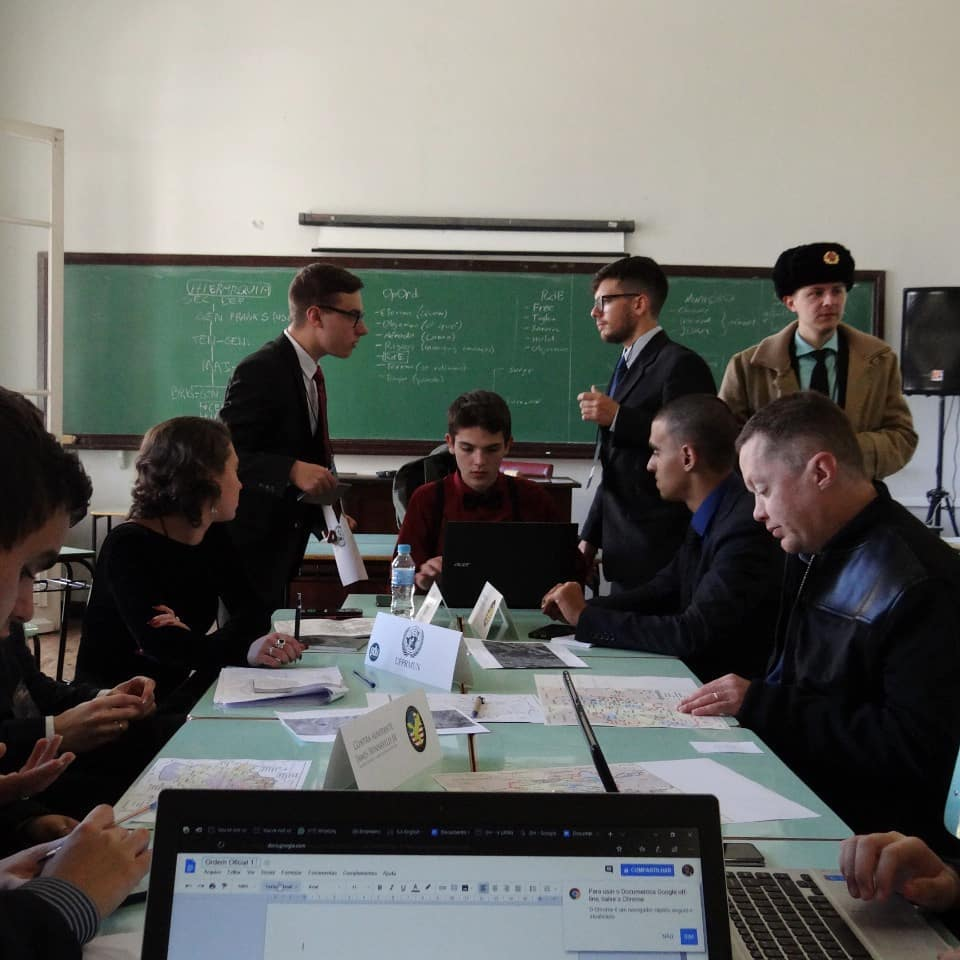

Model United Nations
 Model United Nations is an extracurricular activity where you simulate a United Nations conference. As a delegate, you receive your country which you represent as a politician, minister or the country's equivalent authority for the debate - for example, a UNEP comitee (United Nations Environment Programme) would probably have Brazil's Environment Minister as its representative for this ocasion, so, this would be the representation given to whoever would simulate as Brazil in this comittee -, and the simulation goal is to discuss the theme proposed and try to find a solution that fits the problem needs while respecting every country positioning.
 First being invited by a friend in my 8th grande, I fell in love with the diplomatic and challenging environment that MUNs have and kept this hobby as a routine of personal development.
I am passionate about a special kind of comittee called crisis comittees, which involves situations of high intensity like armed conflicts suchs as the Sirian War and the Russo-Ukrainian War.
Its fast paced approach and high risk-reward situations always keeps me on my toes and instigate me to go further on every decision.
First being invited by a friend in my 8th grande, I fell in love with the diplomatic and challenging environment that MUNs have and kept this hobby as a routine of personal development.
I am passionate about a special kind of comittee called crisis comittees, which involves situations of high intensity like armed conflicts suchs as the Sirian War and the Russo-Ukrainian War.
Its fast paced approach and high risk-reward situations always keeps me on my toes and instigate me to go further on every decision.
 MUNs help develop oratory, diplomacy, problem solving, public speech and leadership skills. Every comittee has a different approach as your fellow delegates from other countries change
and their approach to the theme as well. In the six years since my first MUN, I've gathered several Honor Mentions and Best Delegate as a reward for my exeptional behaviour and leadership.
Nowadays I shifted from delegate to director - the last one being the small group of people who chooses the theme and develop the comittee for the delegates to simulate - as I've already had
plenty of simulations and am recognized as an exelent addition to a crisis comittee.
MUNs help develop oratory, diplomacy, problem solving, public speech and leadership skills. Every comittee has a different approach as your fellow delegates from other countries change
and their approach to the theme as well. In the six years since my first MUN, I've gathered several Honor Mentions and Best Delegate as a reward for my exeptional behaviour and leadership.
Nowadays I shifted from delegate to director - the last one being the small group of people who chooses the theme and develop the comittee for the delegates to simulate - as I've already had
plenty of simulations and am recognized as an exelent addition to a crisis comittee.